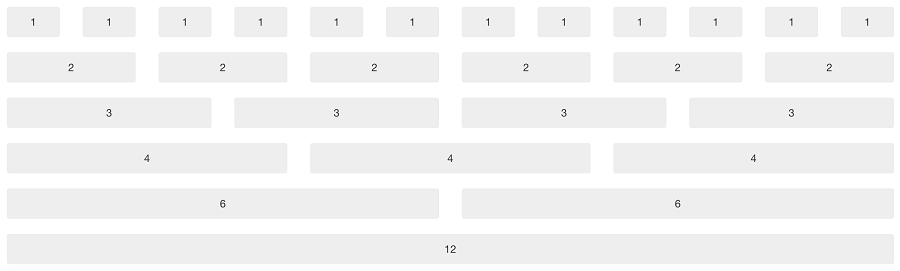

Thank you for purchasing our theme. If you have any questions, please feel free to email us!
For a simple two column layout, create a .row and add the appropriate number of .col-md* columns. As this is a 12-column grid, each .col-md* spans a number of those 12 columns, and should always add up to 12 for each row (or the number of columns in the parent).Everything is wrapped within the .container class.
Example:
Main content hereSidebar hereHalf column hereOther half here
Here's an illustrative example.

There are three main CSS files used in theme.
It is important that you keep the order of the stylesheet files in header as shown in our theme. If you want to modify the stylesheet, use style.css.
How to change color skin
In order to change the color skin, replace skin-blue.css in all of the files (in head) with the skin color of your choice from css/ folder.
Example,if you choose the green skin, replace:
with